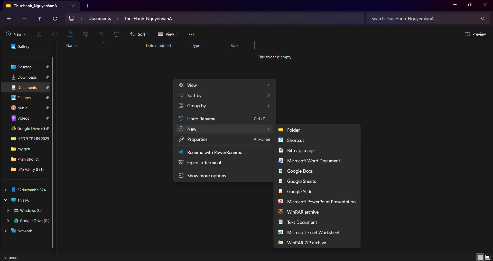
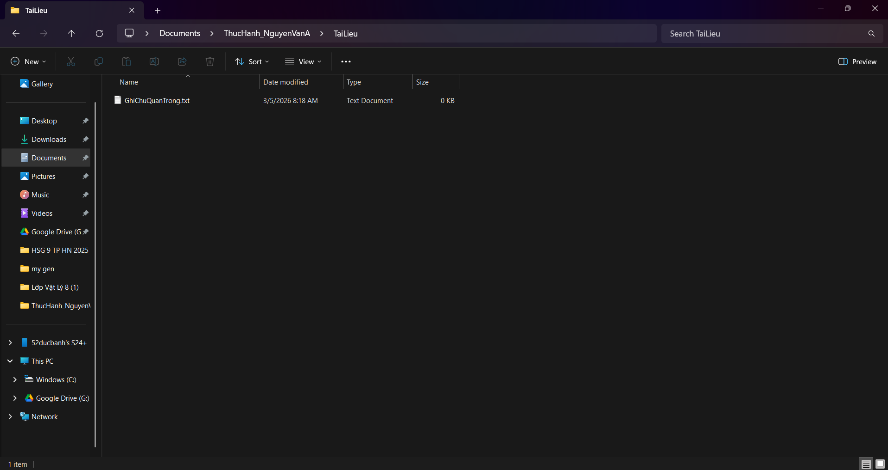
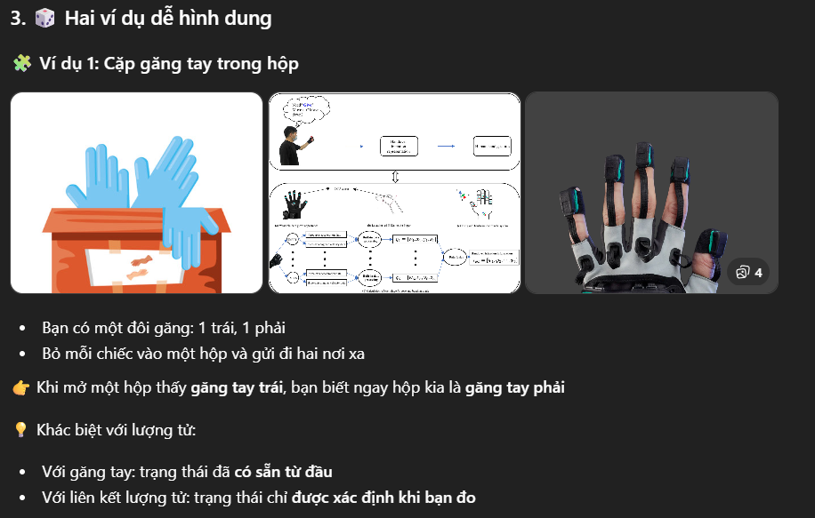
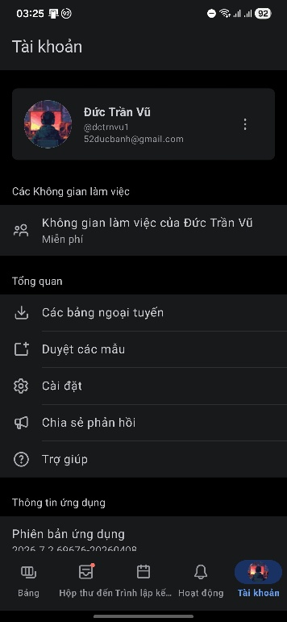
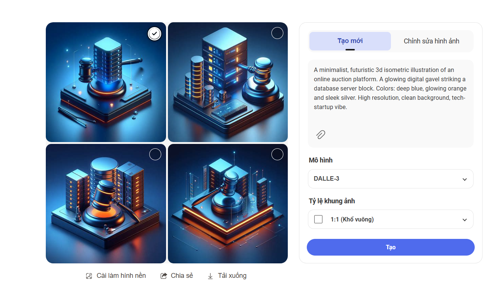
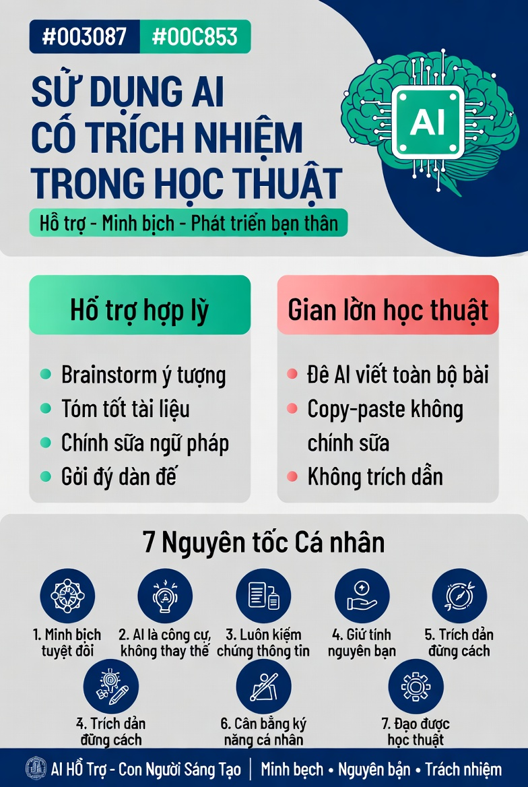

Đang tải...
Xin chào! Mình là Trần Vũ Đức, một sinh viên mang niềm đam mê mãnh liệt với lập trình và công nghệ. Hiện đang theo học tại Khoa Công nghệ thông tin, Trường Đại học Công nghệ (UET-VNU).
Mình không chỉ tập trung vào lý thuyết trên giảng đường mà còn luôn tìm tòi, ứng dụng Trí tuệ nhân tạo (AI) vào việc tối ưu hóa quy trình học tập và làm việc. Mình thích giải quyết các vấn đề phức tạp, từ xây dựng ứng dụng phần mềm đến việc khám phá cơ chế đằng sau các mô hình AI.
1. Thể hiện kỹ năng số: Tổng hợp và số hoá toàn bộ kiến thức, bài tập đã hoàn thành trong học phần Kỹ năng số.
2. Không gian lưu trữ: Tạo một kho lưu trữ trực quan, dễ dàng truy cập, tìm kiếm và chia sẻ thành quả học tập với giảng viên & cộng đồng.
Trở thành một Software Engineer toàn diện (Full-stack), tích cực tham gia vào cộng đồng mở (open-source) và mang lại các giải pháp công nghệ ứng dụng AI phục vụ cuộc sống.
Tổ chức dữ liệu khoa học, đặt tên file chuyên nghiệp và xây dựng cấu trúc thư mục hiệu quả

ThucHanh_[HoTenSinhVien]
New → Folder / Text Document
Rename hoặc nhấn F2
Copy / Cut & Paste
Shift + Delete
Windows + E hoặc click biểu tượng thư mục màu vàng trên thanh tác vụ.ThucHanh_TranVuDuc. Nhấn Enter.GhiChu.txt.GhiChuQuanTrong.txt.TaiLieu bên trong thư mục gốc.Ctrl+C) → vào TaiLieu → Paste (Ctrl+V).DiChuyen.txt → chuột phải → Cut (Ctrl+X) → vào TaiLieu → Paste. File gốc biến mất.Shift + nhấn Delete → xác nhận. File bị xóa hoàn toàn, không qua thùng rác.ThucHanh_HoTenSinhVienKỹ thuật tìm kiếm nâng cao với toán tử đặc biệt và phương pháp đánh giá độ tin cậy nguồn thông tin

Giới hạn kết quả từ các tên miền uy tín (.gov, .edu) cho các nghiên cứu y tế đáng tin cậy.
Tìm trực tiếp các file PDF (báo cáo, nghiên cứu chuyên sâu) về AI trong y tế.
Bắt buộc cụm từ chính xác "machine learning" xuất hiện trong tiêu đề bài viết.
Tìm kiếm bài báo cụ thể từ tạp chí học thuật hàng đầu (như Nature Medicine).
Lọc bài xuất bản sau năm 2020 để lấy các nghiên cứu cập nhật nhất về y học số.
Kiểm tra credentials của tác giả: học vị, tổ chức, lịch sử xuất bản. Nguồn .gov, .edu thường đáng tin.
Ưu tiên tài liệu từ 1-3 năm gần đây, đặc biệt trong lĩnh vực AI đang thay đổi nhanh.
Bài báo khoa học có citations, peer-reviewed journal, dữ liệu thống kê có nguồn gốc rõ ràng.
Xác định mục đích: thông tin, giáo dục hay quảng cáo? Tránh nguồn có lợi ích thương mại che giấu.
Xác nhận thông tin qua ít nhất 3 nguồn độc lập khác nhau trước khi sử dụng.
Phân tích URL: .ac.uk, .edu.vn > .org > .com. Tránh wiki cá nhân, blog không xác định.
Chủ đề: "Ứng dụng của Machine Learning (ML) trong chăm sóc sức khỏe" — lĩnh vực đang phát triển nhanh, kết hợp AI, dữ liệu lớn, y tế lâm sàng và đạo đức.
Kỹ thuật Prompt Engineering để tối đa hoá chất lượng kết quả từ AI

Giao cho AI một vai trò chuyên gia cụ thể để nhận câu trả lời chuyên sâu hơn
Yêu cầu AI suy nghĩ từng bước: "Hãy suy nghĩ từng bước một trước khi trả lời"
Cung cấp 2-3 ví dụ mẫu để AI hiểu định dạng và phong cách mong muốn
Tinh chỉnh dần qua nhiều lần: "Hãy viết lại phần X ngắn hơn và cụ thể hơn"
3 tác vụ học tập được chọn: Tóm tắt tài liệu • Giải thích khái niệm phức tạp • Tạo bộ câu hỏi ôn tập
| Tác vụ | Prompt cơ bản | Prompt cải tiến | Prompt nâng cao |
|---|---|---|---|
| Tóm tắt bài đọc | Ngắn nhưng thiếu một số ý quan trọng | Ngắn gọn và đầy đủ hơn | Cấu trúc rõ ràng, đầy đủ ý, ngôn ngữ phù hợp sinh viên |
| Giải thích Liên kết lượng tử | Dùng nhiều thuật ngữ, khó hiểu | Dễ hiểu hơn | Có định nghĩa, cơ chế, ví dụ và ứng dụng thực tế |
| Tạo câu hỏi quang hợp | ít đa dạng | Nhóm đa dạng hơn | Có đáp án, câu hỏi mở, bao quát theo thang Bloom |
Sử dụng công cụ quản lý dự án để tối ưu hoá quy trình làm việc nhóm hiệu quả

🌟 Bài học quan trọng nhất: Phải chủ động tương tác, kỷ luật cập nhật tiến độ và thống nhất quy tắc ngay từ đầu. Tổng số ảnh minh chứng: 8 ảnh.
Tạo ra sản phẩm nội dung số chất lượng cao bằng cách tận dụng tối đa sức mạnh của AI
Nội dung tạo bằng Gemini, hình ảnh DALL-E 3 & Canva

Bài viết chi tiết giải thích kiến trúc JavaFX MVC và kết nối Database an toàn
GeminiCác icon, logo và button giao diện cho app BidMaster được tạo siêu tốc
DALL-E 3Tóm tắt toàn bộ quy trình hoạt động của phiên đấu giá thành 1 file ảnh trực quan
Canva MagicTên dự án: Bài viết kỹ thuật & Infographic giới thiệu kiến trúc ứng dụng đấu giá "BidMaster"
• Gemini cung cấp cấu trúc → tự chủ động loại bỏ pseudo-code, chèn code JDBC kết nối MySQL thực tế từ project BidMaster
• DALL-E 3 tạo concept 3D isometric → dùng Photoshop xóa text vô nghĩa, tinh chỉnh màu sắc
• Cắt bỏ các từ ngữ quá bay bổng của AI, đưa văn bản về đúng chuẩn ngôn ngữ sinh viên IT
Bộ nguyên tắc AI cá nhân và phân tích sâu các vấn đề đạo đức trong kỷ nguyên trí tuệ nhân tạo

AI có thể bịa ra thông tin (hallucination). Mình cam kết luôn xác minh thông tin từ AI qua ít nhất 2 nguồn độc lập trước khi sử dụng hay chia sẻ.
Không sử dụng AI để sao chép, tái tạo nội dung có bản quyền. Luôn trích dẫn nguồn gốc khi dùng nội dung AI tạo ra trong học thuật.
Không nhập thông tin nhạy cảm (CCCD, mật khẩu, dữ liệu y tế) vào AI. Đọc kỹ chính sách bảo mật trước khi dùng công cụ AI mới.
AI được huấn luyện trên dữ liệu có thể mang định kiến giới tính, chủng tộc, văn hoá. Mình luôn đặt câu hỏi phản biện với output của AI.
Khai báo rõ ràng khi sử dụng AI trong bài tập, luận văn. Coi AI là công cụ hỗ trợ, không phải thay thế tư duy và học tập của bản thân.
AI tiêu thụ năng lượng khổng lồ. Sử dụng AI có chủ đích, tránh lãng phí query. Quan tâm đến tác động của AI tới việc làm và bất bình đẳng xã hội.
Cam kết không sử dụng AI để tạo nội dung deepfake, phishing, spam, hoặc bất kỳ hành vi nào gây hại cho cá nhân hay cộng đồng.
| Thách thức | Mô tả | Giải pháp đề xuất |
|---|---|---|
| Gian lận học thuật | Dùng AI viết 100% bài nộp, làm mất đi tư duy và tính nguyên bản cá nhân. | Chỉ dùng hỗ trợ brainstorm, viết lại 60-70%, trích dẫn rõ ràng. |
| Ảo giác AI (Hallucination) | AI tự tin đưa ra thông tin hoặc trích dẫn giả mạo, sai lệch kiến thức học thuật. | Kiểm chứng qua giáo trình, tài liệu uy tín; không tin tưởng tuyệt đối. |
| Quyền sở hữu trí tuệ | Sử dụng nội dung do AI tạo ra mà không ghi rõ nguồn gốc. | Minh bạch nguồn gốc ("Dàn ý tạo bởi AI"), tránh đạo văn vô ý. |
| Bảo mật dữ liệu cá nhân | Rò rỉ code dự án thực tế, thông tin cá nhân khi chat với các AI. | Tuyệt đối không dán (paste) dữ liệu nhạy cảm hay thông tin nội bộ. |
Chủ đề: "Vai trò của AI trong học tập của sinh viên Việt Nam: Cơ hội và Thách thức"
📌 Trích dẫn minh bạch: "Tác giả đã sử dụng Grok AI để hỗ trợ xây dựng dàn ý. Toàn bộ bài luận đã được chỉnh sửa và bổ sung ý kiến cá nhân."
Nhìn lại hành trình học tập, những bài học rút ra và định hướng tương lai
Ban đầu phân bổ thời gian không đều, dành quá nhiều cho task 1. Bài học: lập timeline từ đầu và tuân thủ nghiêm.
Output AI lúc đầu rất generic. Phát hiện ra rằng Prompt là "nghệ thuật" cần luyện tập, không phải một lần là xong.
Tìm kiếm nâng cao ban đầu trả về quá nhiều kết quả. Học cách kết hợp nhiều toán tử để lọc chính xác.
Khó đồng bộ nhóm qua online. Giải quyết bằng cách thiết lập "meeting ground rules" rõ ràng từ đầu.
Trải nghiệm cá nhân: Quá trình xây dựng Portfolio này là một hành trình nhìn lại bản thân. Nó không chỉ giúp mình hệ thống hoá các kiến thức về quản lý file, tìm kiếm thông tin hay viết prompt, mà còn rèn luyện cho mình tính kỷ luật và sự tỉ mỉ khi phải trình bày mọi thứ thành một sản phẩm hoàn chỉnh, đẹp mắt.
Điều mình tâm đắc nhất là sự thay đổi tư duy từ "người dùng" sang "người làm chủ" AI. Thông qua Bài tập số 3 (Prompt Engineering) và Bài tập số 6 (AI Đạo đức), mình nhận ra rằng AI chỉ thực sự mạnh mẽ khi được dẫn dắt bởi một bộ não con người có tư duy phản biện.
Áp dụng Prompt Engineering vào nghiên cứu khoa học, viết báo cáo và code review với AI
Xây dựng personal brand trên GitHub, tham gia hackathon AI, intern tại startup tech
Nghiên cứu chuyên sâu về AI Ethics, đóng góp open-source, viết blog chia sẻ kiến thức
Xây dựng sản phẩm AI có tác động tích cực đến giáo dục tại Việt Nam
"Trong kỷ nguyên AI, kỹ năng quan trọng nhất không phải là biết sử dụng AI, mà là biết khi nào nên tin vào AI, khi nào nên tự suy nghĩ, và làm thế nào để sử dụng AI một cách có đạo đức và trách nhiệm."